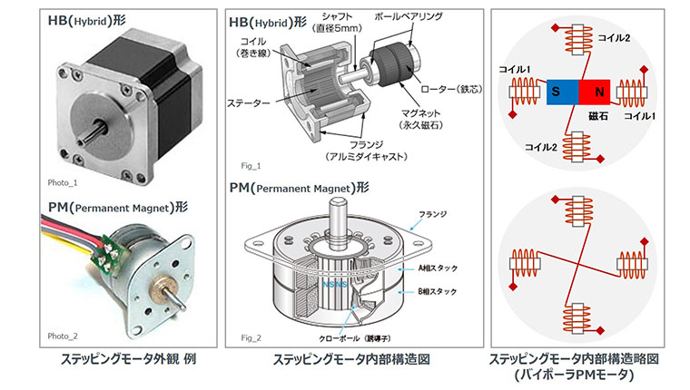
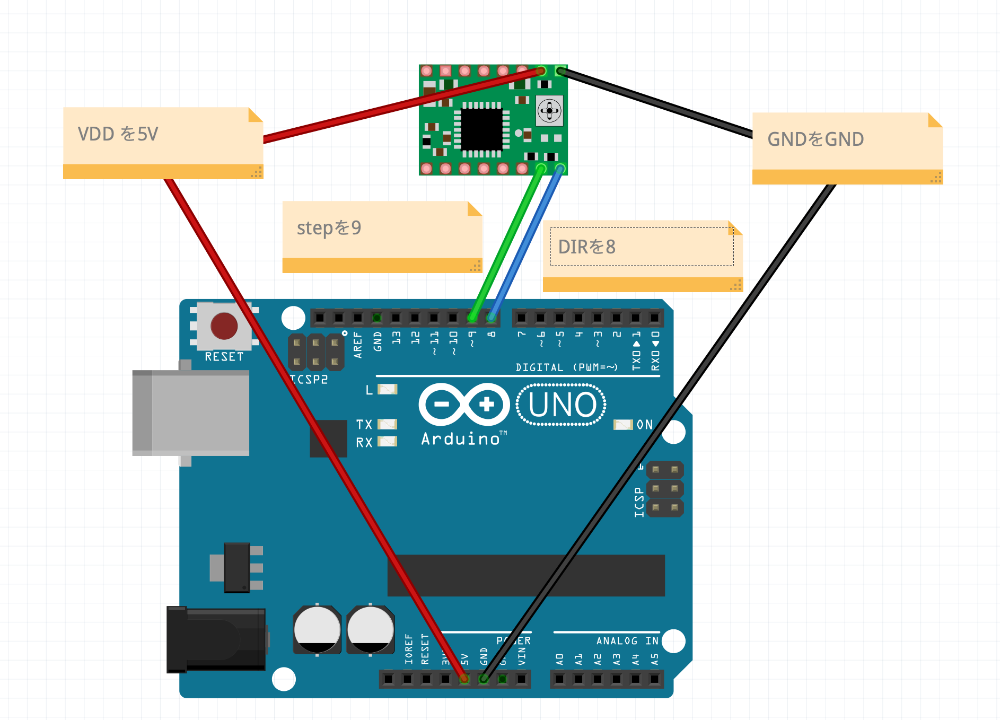
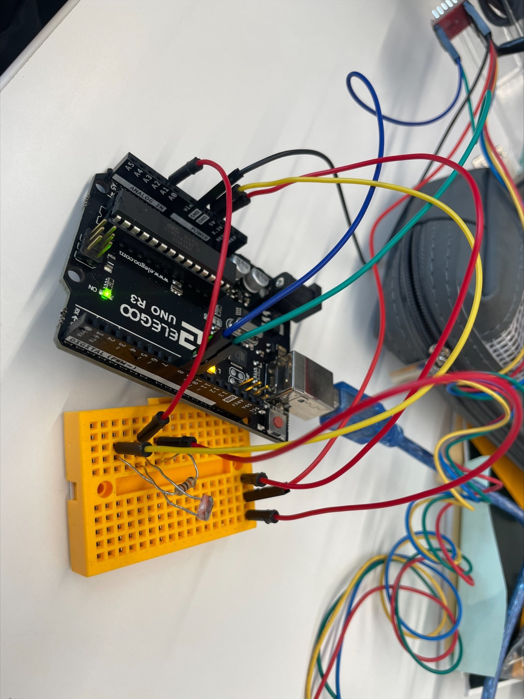
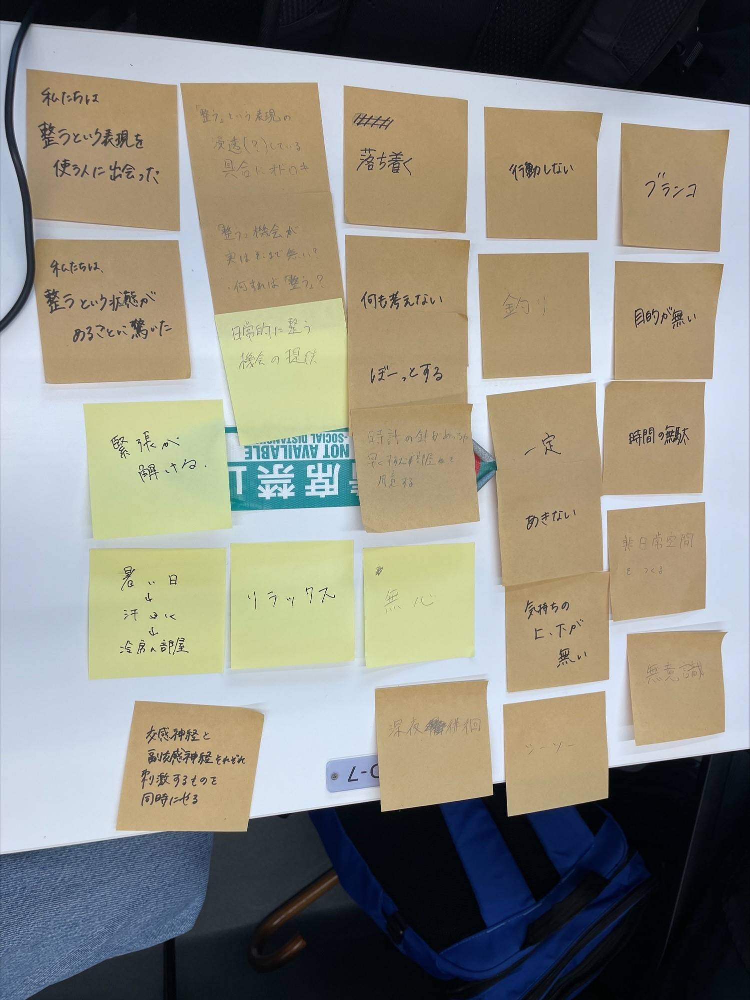

第3回｜商品・サービス企画設計(プロトタイピング）
-今回のテーマー動きを操るー
Assignment1
ステッピングモーターの原理

ステッピングモーターをArduinoで動かす
配線

モーターを動かすためのソースコード
- const int DIR = 8;
- const int STEP = 9;
- void setup() {
- pinMode(DIR, OUTPUT);
- pinMode(STEP, OUTPUT);
- digitalWrite(DIR, LOW);
- digitalWrite(STEP, LOW);
- }
- void loop() {
- for (int i=0; i <= 50; i++){
- clockwise(5000);
- }
- for (int i=0; i <= 50; i++){
- counter_clockwise(5000);
- }
- }
- void clockwise(int delaytime){
- digitalWrite(DIR, HIGH);//HIGHは時計回り
- digitalWrite(STEP, HIGH);
- delayMicroseconds(delaytime);
- digitalWrite(STEP, LOW);
- delayMicroseconds(delaytime);
- }
- void counter_clockwise(int delaytime){
- digitalWrite(DIR, LOW);//はLOWは反時計回り
- digitalWrite(STEP, HIGH);
- delayMicroseconds(delaytime);
- digitalWrite(STEP, LOW);
- delayMicroseconds(delaytime);
- }
※ ソースコードをhtmlに変更する変換アプリのサイト
実際の画像と動画

Assignment2

6班グループまとめ
・HMWとは…HMW
How might we…？どうすれば私たちは～できそう？
サウナで整うという表現をしている人に出会った。
→私たちは一定の動きをしていても飽きないこと＝「整うという表現」に繋がるのではないかと考えた。
ーーーーーーーーーーーーーーーーーーーーーーーーーーーーーーーーーーーーーーーーーーーーーーーーーーーーー
・Yes.andとは…Yes.and
こうすれば…Yes.and…
整うという表現を使ってもらうには…
→そうそう、整うといえば、サウナだよね
→そうそう、サウナといえば、ぼーっとできるよね
→そうそう、ぼーっとするといえば、何も考えないでいられるよね
→そうそう、何も考えないでいられるといえば、ブランコとかシーソーだよね
→そうそう、ブランコとかシーソーといえば、一定の動きをしているよね
→そうそう、一定の動きをしているといえば、ずっと見ていられるよね など…
疑問点、自分の気づき!!
何も考えないとは、力を抜くこと、呼吸にも関係しているのではないか…
何も考えない＝無の状態